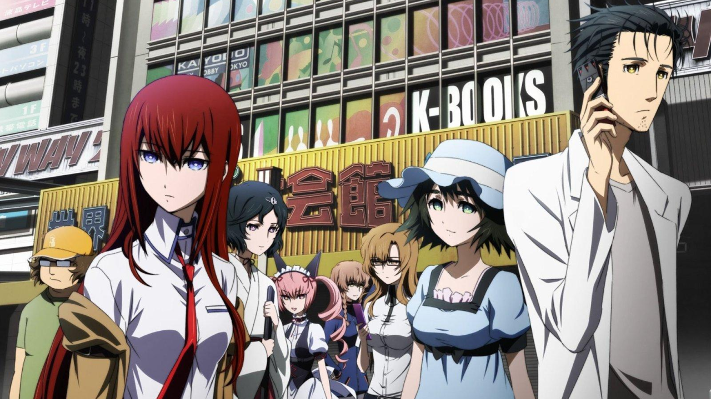

Anime

Anime, animê (português brasileiro) ou animé (português europeu) (em japonês: アニメ), se refere é uma animação desenhada à mão ou por computação gráfica do Japão. Fora do Japão e em inglês, anime refere-se à animação japonesa e refere-se especificamente à animação produzida no Japão. A palavra é a pronúncia abreviada de "animação" em japonês, onde esse termo se refere a qualquer animação, não importa o país. Para os ocidentais, a palavra se refere às animações oriundas do Japão. A origem da palavra é controversa, podendo vir da palavra inglesa animation [animação] ou da palavra francesa animé [animado], versão defendida por pesquisadores como Frederik L Schodt e Alfons Moliné.
As primeiras animações comerciais japonesas datam de 1917. Um estilo de arte característico surgiu na década de 1960 com as obras do mangaká Osamu Tezuka e se espalhou nas décadas seguintes, desenvolvendo um grande público doméstico. O anime é distribuído nos cinemas, por meio de transmissões de televisão, diretamente para a mídia doméstica e pela Internet. Além das obras originais, os animes são muitas vezes adaptações de mangás (quadrinhos japoneses), light novels ou videogames. É classificado em vários gêneros (comédia, terror, drama, ficção científica, etc.) visando vários públicos amplos e de nicho.
Uma boa parte das animações japonesas possui sua versão em mangá, os quadrinhos japoneses. Os animes japoneses e os mangás se destacam principalmente por seus olhos geralmente muito grandes, muito bem definidos, redondos ou rasgados, cheios de brilho e muitas vezes com cores chamativas, para que, desta forma, possam conferir mais emoção aos seus personagens. Animes podem ter o formato de séries para a televisão, filmes ou home video (OVAs e OADs) ou via internet (ONAs).
O anime é um meio diversificado com métodos de produção distintos que se adaptaram em resposta às tecnologias emergentes. Combina arte gráfica, caracterização, cinematografia e outras formas de técnicas imaginativas e individualistas. Em comparação com a animação ocidental, a produção de anime geralmente se concentra menos no movimento e mais nos detalhes das configurações e no uso de "efeitos de câmera", como panorâmica, zoom e ângulos. Diversos estilos de arte são usados, e as proporções e características dos personagens podem ser bastante variadas, com uma característica comum sendo olhos grandes e emotivos.
A indústria de anime consiste em mais de 430 estúdios de produção, incluindo grandes nomes como o Studio Ghibli, Gainax e Toei Animation. Os animes atingem a maioria das vendas de DVD e têm sido um sucesso internacional após a ascensão de dublagens em exibições televisionadas. Este aumento da popularidade internacional resultou em produções não-japonesas usando o estilo de arte do anime, mas essas obras têm sido definidas como animação influenciada por animes, tanto por fãs quanto pela indústria.
Fonte: Wikipédia